../

March 15, 2021
At the beginning of this year, I made a journey to Mike Hoge, the father of GOTHIC. It was an honour to talk to him about the old vision of the game that we present in this archive, in order to make the dream come true in project PHOENIX. He gave me his old design folders, such that I could digitise them for this event. You can read everything about this journey in my essay 'Phoenix & the Rescue of Design' (written in german, but it already got translated into romanian, english, polish and russian).
GOTHIC was released on march 15th 2001 in Germany. We celebrate the 20th anniversary for 30 days starting today. Every day we try to release something that we have prepared and you can expect a lot of new things from Gothic's design process never seen before, published with the creators approval. We cannot promise that we will be able to show you everything that we want on time. There may be delays, but we do our best and everything will be fine.
Considering the documents, I have digitised them page by page and adjusted every page by hand. They were mostly unstructured. I have given them a new order and I have tried to do them justice in our presentation here. I think that the material that we are about to release is of historical value, at least it is most valuable to us and the Gothic Alpha Reboot we are working on. I want to thank Mike Hoge and Tom Putzki for the material and for their ongoing support.
May you enjoy our gifts. Happy birthday to GOTHIC.
Florian aka flosha
March 16, 2021
I would like to take this opportunity to say 'thank you' to the community again:
For the many occasions at which people have approached me and told me, how much fun they've had with our games.
For the engagement expressed in modding the games, in scrutinising them, in dissecting the lore and in everything which has happened around the games.
And, above all: for playing the games!
Thank you!
Mike
 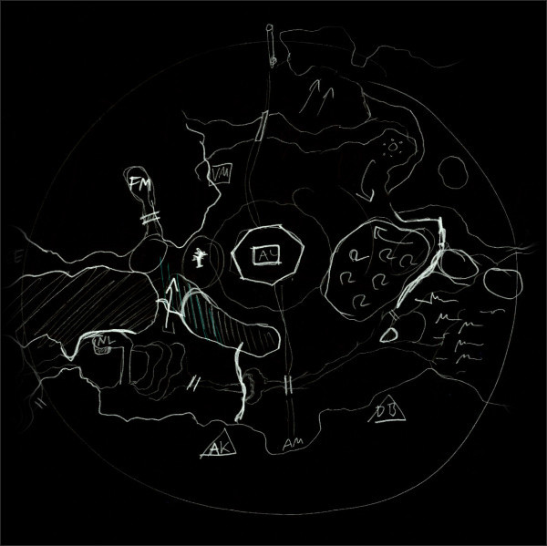
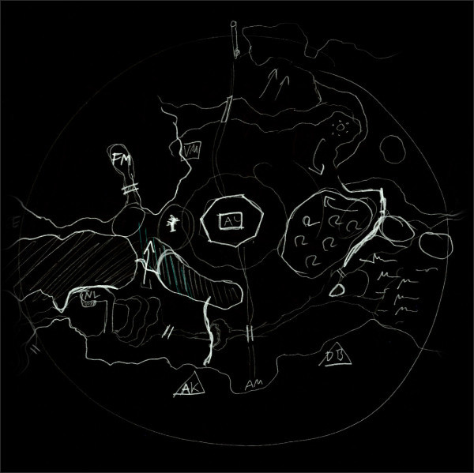


 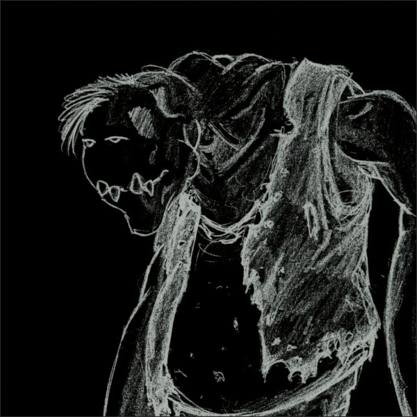
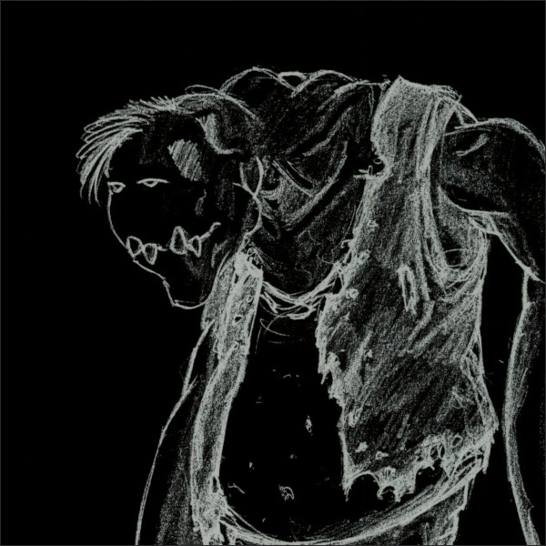

 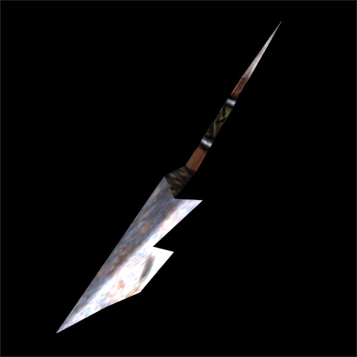
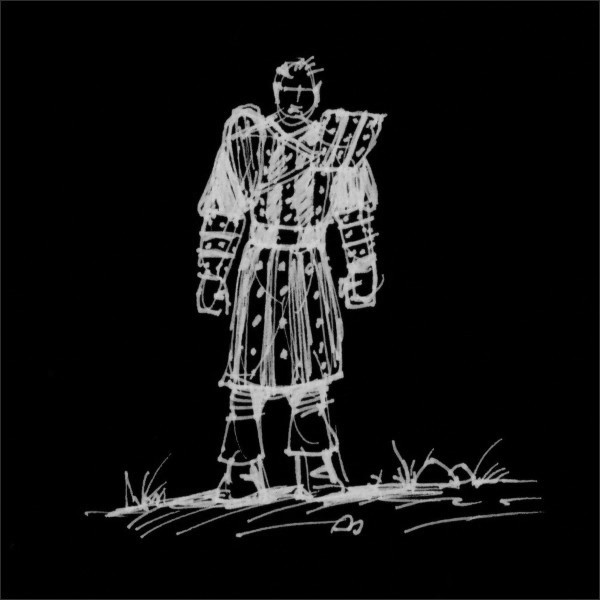
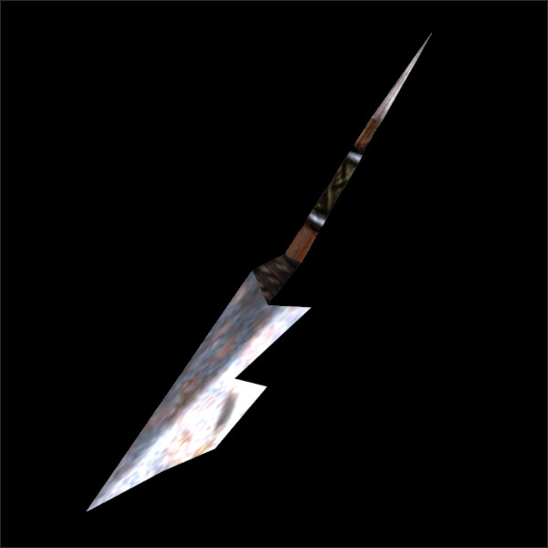
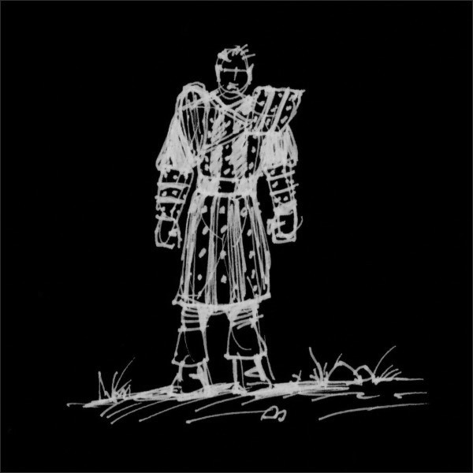

 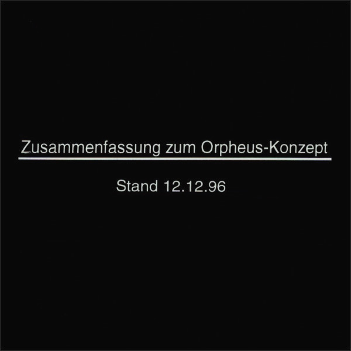
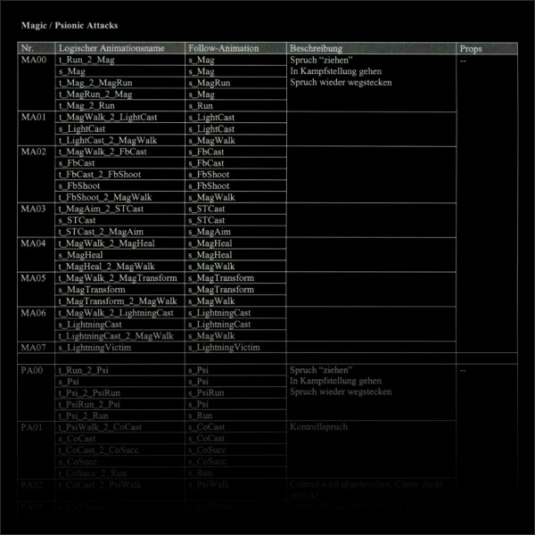
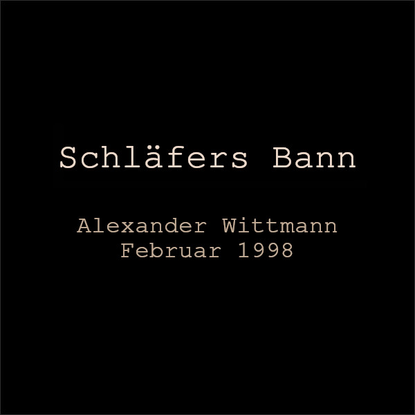
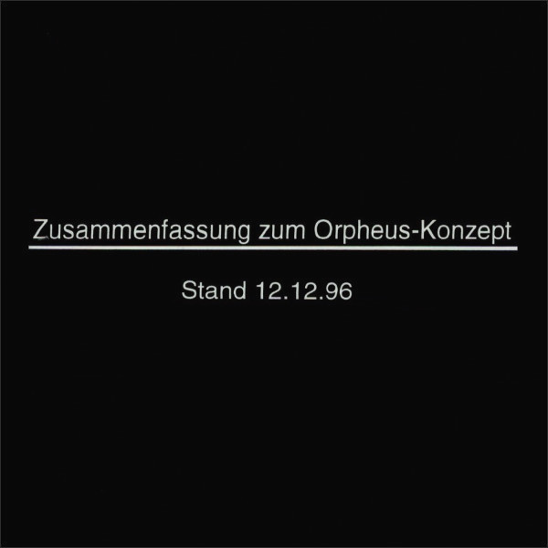
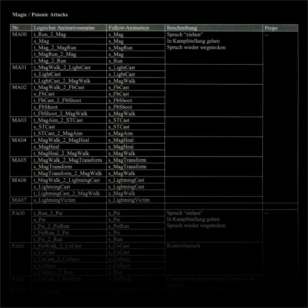
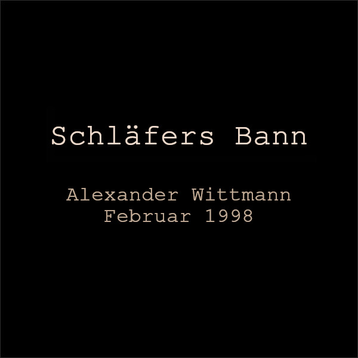
{kind=link}
April 15, 2021
Below is the gift of gifts to finish our Anniversary special: A Phoenix Main Plot design document (from 17.09.2000). But be aware(!): If you read this document, you will be spoilered A LOT of Orpheus' Story details! If you really want to experience the game as it was it to be meant and as we envision it to be, we recommend you to read it only after playing it. It won't spoiler everything, since there are still many open questions in this document, which was an ongoing work in progress, and there are conflicting ideas and you won't know which of the solutions suggested in this original design concept we will choose or what we will come up with instead. But there are still some major details that could ruin a few suprises.
Nonetheless we have decided that we do not want to hold it back. What we are able to release, we release. With this decision we proof this claim once and for all. People were telling me all the time, that this and that will never see the day of light. That we will never be able to release such things, that even if we acquire them, we won't be able (and some were even doubting that we are willing!) to share the stuff, blablabla. I think we can say, that we proved them wrong. Once again I want to thank the developers helping us to provide this material to you, thank you to Mike, Tom, Stefan, Mattias, Kai and Ralf. Happy birthday to Gothic.
In memory of Alex Brüggemann. - Florian aka flosha
Support: Sometimes we get asked how you can support us other than contributing to the Archive and the Game. If you want to support me and PhoenixTales for the effort, time and passion we put into this and help us realising this vision in our project Phoenix, you can donate over PayPal to our mail address. Thank you.
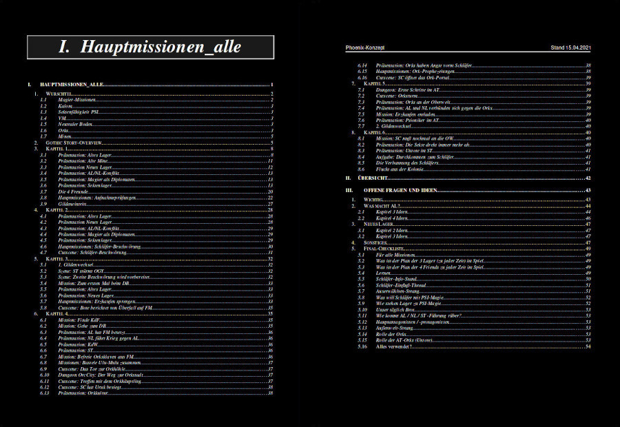